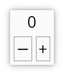

Counter: a simple widget
Topics: prelude, impl_scope! and #[widget] macros, messages, Window trait

Graphical User Interfaces have two main concerns:
- Presenting information visually
- Handling user input
The code for this example can be found here. Lets dive in.
Prelude
#![allow(unused)] fn main() { use kas::prelude::*; use kas::widgets::{Label, TextButton}; }
The kas::prelude includes a bunch of commonly-used, faily unambiguous stuff.
Besides that, we only use a couple of widgets.
Macros
impl_scope
We define our Counter widget within an impl_scope!:
#![allow(unused)] fn main() { use kas::prelude::*; use kas::widgets::Label; impl_scope! { #[derive(Debug)] struct Counter { // core: widget_core!(), // #[widget] display: Label<String>, count: i32, } impl Self { fn new(count: i32) -> Self { Counter { // core: Default::default(), display: Label::from(count.to_string()), count, } } } } }
This is a macro provided by the impl-tools library which wraps a type
definition (struct, enum, type alias or union) along with impl blocks for this
type. We use impl_scope! for the following:
impl Selfsyntax (equivalent toimpl Counterhere)- to support the
#[widget]macro, which is affected byimplblocks within the scope
#[widget]
The #[widget] attribute macro is used to implement the Widget trait (this
is the only supported method of implementing Widget). This attribute appears
on a struct (or tuple struct) definition within an impl_scope!:
#![allow(unused)] fn main() { use kas::prelude::*; use kas::widgets::{Label, TextButton}; #[derive(Clone, Debug)] struct Increment(i32); impl_scope! { #[widget{ layout = column: [ align(center): self.display, row: [ TextButton::new_msg("−", Increment(-1)), TextButton::new_msg("+", Increment(1)), ], ]; }] #[derive(Debug)] struct Counter { core: widget_core!(), #[widget] display: Label<String>, count: i32, } impl Widget for Self { fn handle_message(&mut self, mgr: &mut EventMgr, _: usize) { if let Some(Increment(incr)) = mgr.try_pop_msg() { self.count += incr; *mgr |= self.display.set_string(self.count.to_string()); } } } } }
First note: using #[widget] on struct Counter implements the Widget
trait, yet we impl Widget for Counter anyway. As noted above, the
#[widget] macro is able to read this impl block (since it is within the same
impl_scope!) and can adjust it (injecting extra methods as necessary).
Properties and layout
The #[widget] attribute macro supports parameters; here we use the layout
parameter to define the widget's layout. For a reference, see
kas::macros::widget.
In this case, the layout is a column over self.display (centred) and
a row over two TextButton widgets.
Note that there are three syntaxes for placing child items (widgets) within the layout:
"a string"— generates a simple label widget (unlikeLabel, this does not enable line wrapping)self.foo— embeds a field (wherefoois either a widget or just a type implementingLayout)Foo::bar()whereFoois a widget type (must be in scope and start with an upper-case letter) andFoo::bar()constructs an instance of this type
Core
Struct Counter has field core: widget_core!(). This macro is a type
generator. It is not a stand-alone macro, but a marker substituted by the
#[widget]. Every widget must have one field with this type.
The substition may be the CoreData type or may be a generated type with the
same rect: Rect and id: WidgetId fields (which may be accessed directly).
The type always supports Debug, Default and Clone.
Aside: since KAS is a stateful UI system, the TextButton widgets in our
row must be stored somewhere, right? Yes: in the widget_core! field
(a generated type).
Child widgets
Other than when embedded directly in the layout (as with the TextButtons),
child widgets are a field marked by #[widget]:
struct Counter {
#[widget] display: Label<String>,
// ...
}
This usage of #[widget] is another marker supported by the #[widget] macro
(on the type).
Note that any object supporting Layout may appear in the layout, but that
fields which are widgets must carry the #[widget] marker. This notifies that
the field implements Widget and must be initialized ([Widget::configure]).
If #[widget] is missing on a visible widget, you will get a crash when the
mouse moves over the widget and the event handler resolves an uninitialized
WidgetId.
Messages
The message type
We skipped this type definition above:
#![allow(unused)] fn main() { #[derive(Clone, Debug)] struct Increment(i32); }
A simple tuple struct, used for our button messages. The Debug implementation
is required to send as a message; Clone is needed for the new_msg method.
Aside: we could simply use i32 and forget the Increment type, but using a
named type provides useful documentation, especially in log messages.
The message stack
Our button widgets are constructed using TextButton::new_msg, the first of which is
equivalent to TextButton::new("+").on_push(|mgr| mgr.push_msg(Increment(1))):
a button with label "+" and a closure called "on push".
KAS's event-handling model is described here. In our example:
- When the button is clicked or otherwise activated an
Eventis sent (via tree traversal: the root widget, ourCounterwidget, theTextButton) - If this is an "activation" event (
Event::on_activate), then theTextButtoncalls its "push" closure (note to self: consider renaming to "press") - This closure calls
EventMgr::push_msg, pushingIncrement(1)to the message stack. - The message is sent back via reverse tree traversal. At each step, if the
message stack is non-empty,
Widget::handle_messageis called (thusCounter::handle_messageis called). - Our
CounterusesEventMgr::try_pop_msgto retrieve a message of typeIncrementfrom the stack and updates the counter accordingly.
Counter::handle_message is implemented above. Lets see it again:
fn handle_message(&mut self, mgr: &mut EventMgr, _: usize) {
if let Some(Increment(incr)) = mgr.try_pop_msg() {
self.count += incr;
*mgr |= self.display.set_string(self.count.to_string());
}
}
The method HasString::set_string called on self.display returns a
TkAction; this return value notifies that a redraw is required.
TkAction is a #[must_use] type which should be fed
to EventState::send_action, or equivalently: *mgr |= action.
And, yes, we update the state of self.display by hand here. Is this strategy
likely to lead to out-of-sync state in complex UIs? Probably. KAS offers a
solution to this which will be seen in the next example: sync-counter.
Unhandled messages
Aside: what if we forgot to write our handle_message implementation and left
the message on the stack? Assuming you have a logger enabled, you'd see
something like this:
[2022-08-20T14:33:47Z DEBUG kas_core::event::manager::messages] push_msg: counter::main::Increment::Increment(1)
[2022-08-20T14:33:47Z WARN kas_core::event::manager::messages] unhandled: counter::main::Increment::Increment(1)
Now perhaps you see why we defined our Increment type and didn't simply push an i32!
Window
Windows must implement the Window trait. We could use
kas::widgets::dialog::Window,
but implementing Window on our widget is very easy:
impl Window for Counter {
fn title(&self) -> &str { "Counter" }
}